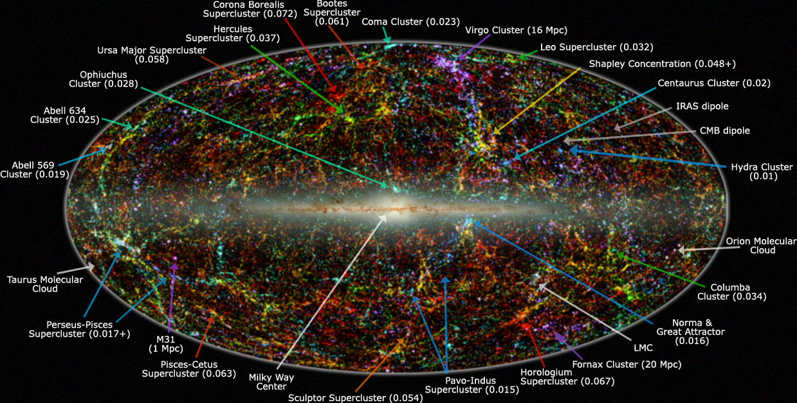

Supercluster
A supercluster is a large group of smaller galaxy clusters or galaxy groups; they are among the largest known structures in the universe. The Milky Way is part of the Local Group galaxy group (which contains more than 54 galaxies), which in turn is part of the Virgo Supercluster, which is part of the Laniakea Supercluster, which is part of the Pisces Cetus Supercluster Complex. Source: wikipedia
The Great Attractor is a region of gravitational attraction in intergalactic space and the apparent central gravitational point of the Laniakea Supercluster of galaxies that includes the Milky Way galaxy, as well as about 100,000 other galaxies. Source: wikipedia
Below is a table on Supercluster Data:
| Supercluster Name | Length | Galaxy Content |
|---|---|---|
| Einasto Supercluster | 360 million ly | 100,000 galaxies |
| Laniakea Supercluster | 520 million ly | 125,000 galaxies |
| King Ghidorah Supercluster | 1321 megaparsec | 19 galaxy clusters |
| Perseus-Pisces Supercluster | 250 million ly | 15,000 galaxies |